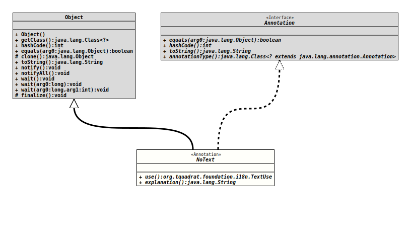

Module org.tquadrat.foundation.i18n
Package org.tquadrat.foundation.i18n
Annotation Interface NoText
@Retention(SOURCE)
@Target({FIELD,METHOD})
@Repeatable(NoTexts.class)
@ClassVersion(sourceVersion="$Id: NoText.java 1124 2024-03-19 11:02:47Z tquadrat $")
@API(status=STABLE,
since="0.4.6")
public @interface NoText
Marker for omitted texts.
Use it to annotate elements that are expected to have a certain text associated with, but this is not there – either because it was omitted completely, or because it is defined elsewhere.
This annotation is more or less a formalised comment, it will not be processed in any way.
- Author:
- Thomas Thrien (thomas.thrien@tquadrat.org)
- Version:
- $Id: NoText.java 1124 2024-03-19 11:02:47Z tquadrat $
- Since:
- 0.4.6
- UML Diagram
-

UML Diagram for "org.tquadrat.foundation.i18n.NoText"
{kind=link}
-
Optional Element Summary
Optional ElementsModifier and TypeOptional ElementDescriptionReturns the explanation why the text was omitted here.The expected use of the omitted text; the default isTextUse.TEXTUSE_DEFAULT.
-
Element Details
-
use
The expected use of the omitted text; the default is
TextUse.TEXTUSE_DEFAULT.- Returns:
- The text use.
- Default:
TEXTUSE_DEFAULT
-
explanation
Returns the explanation why the text was omitted here.- Returns:
- The description.
- Default:
""
-